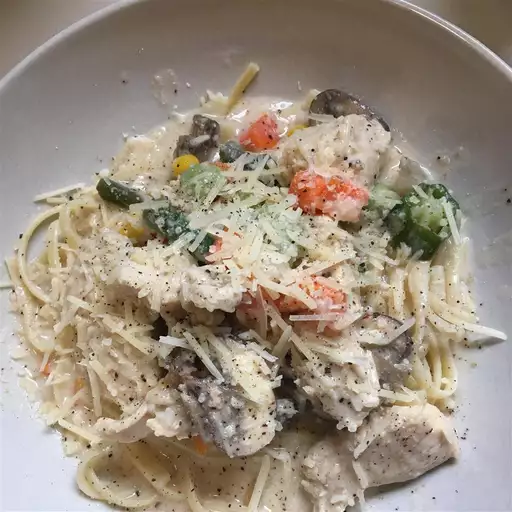

Chicken Alfredo

Description
One of the simplier recipes you may do!
Ingrediants
-
1 pound uncooked fettuccine or linguine
-
1 (10 ounce) package frozen mixed vegetable
-
1 (16 ounce) jar Alfredo-style pasta sauce
-
1 (4.5 ounce) can sliced mushrooms
-
⅓ cup milk
Directions
-
Fill a large pot with lightly salted water and bring to a rolling boil.
Cook fettuccine at a boil until tender yet firm to the bite, about 8 minutes. Drain well.
- While the pasta is cooking, place cubed cooked chicken, Alfredo sauce,
frozen vegetables, mushrooms, and milk in a large saucepan over medium-low heat. Cook and stir until chicken is heated through and vegetables are tender.
- Serve warm Alfredo and chicken sauce over cooked noodles.
>